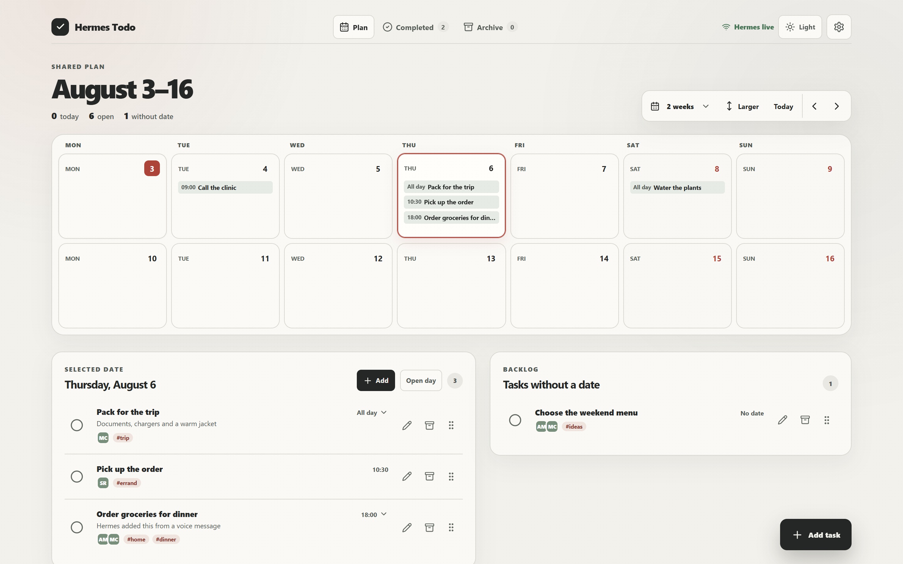
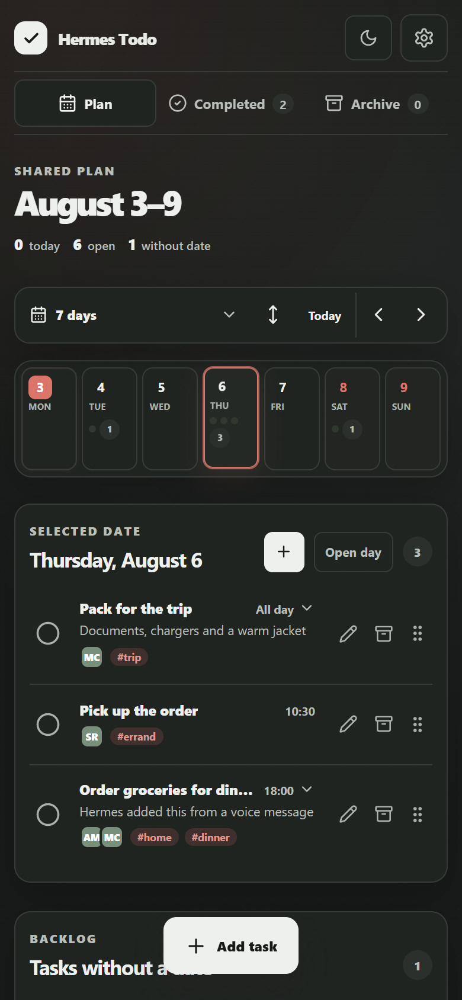
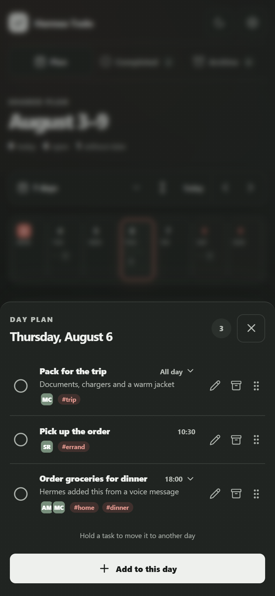
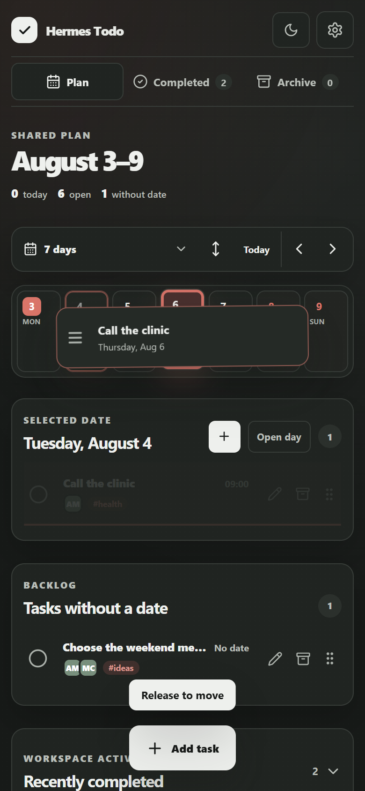
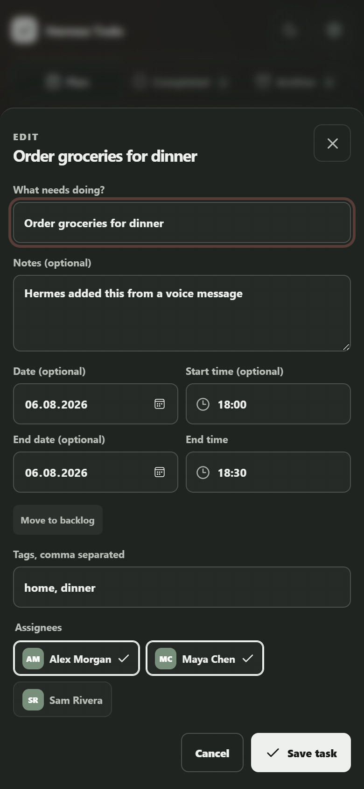

Say it naturally
Use text or audio. Describe the task the same way you would explain it to another person.
Open source · self-hosted · Telegram Mini App
Send Hermes a message or a voice note. Tasks, people, and dates appear in one simple calendar that everyone can see and update together.
No task forms. No slash commands. No programmer rituals just to add milk to the shopping list.

From conversation to action
Plans are often made in chat and then disappear in chat. Hermes Todo closes that gap: Hermes understands the request, the plugin structures it, and the shared Mini App keeps the current plan visible.
Use text or audio. Describe the task the same way you would explain it to another person.
The plugin extracts the date, time, tags, notes and assignees, then sends a clean task to the workspace.
The Telegram Mini App refreshes the shared calendar, where participants can edit, move or complete the task.
A normal person should not have to learn syntax to add milk to a shopping list.
The visual layer for Hermes
A focused shared workspace with the interaction details that ordinary task bots usually skip: clear ownership, a real calendar, drag-to-reschedule, useful notes and recoverable history.
Switch between one day, a week, two weeks or four weeks. Open any date for the complete plan and keep both scheduled tasks and backlog in one view.
Tap once to select a day, twice to open it. Hold and drag a task to another date. The interaction stays fast in a Telegram Mini App instead of pretending the phone is a tiny desktop.


Move a task to another day without reopening its editor. Dates change, but notes, tags, assignees and timing stay attached to the work.


Try it locally
The loopback-only demo needs Node.js 22+, but no Telegram bot, domain, Docker or production secrets. It starts with synthetic tasks so you can inspect the interface immediately.
$ git clone https://github.com/flufox/jnicq-hermes-todolist.git $ cd jnicq-hermes-todolist $ npm ci $ npm run dev:demo # Open http://127.0.0.1:5173
Community release candidate
Hermes Todo is open source, self-hosted and deliberately focused on one small group: a family, housemates or a compact team.